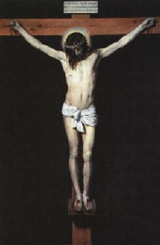

NUVENS
AMEAÇADORAS
O BOM RELACIONAMENTO
COM TODOS
A menina vivia bem com todos os
vizinhos, sobretudo com a famÃlia Cimarelli, com quem partilhava a sua crença
cristã e sua fé. Teresa, sua amiga, lhe disse um dia: “Amanhã você me acompanha para comungar em Campomorto�
E da mesma maneira, com todos os vizinhos,
amigos da sua famÃlia, com os quais se encontrava para participar da Santa Missa e
receber JESUS Sacramentado, nas Igrejas daquela região denominada região do pântano,
ela se mantinha como pessoa agradável, honesta e excelente companhia. Inclusive com
a famÃlia do próprio João Serenelli e do seu filho Alessandro, gente simples, muitas
vezes rude e pecadora, que viviam na mesma casa por necessidade do trabalho. Ela tão
jovem e tão consciente, raciocinava: “Somos verdadeiramente os filhos do mesmo poderoso e misericordioso
DEUS. Então todos nós somos irmãos. Por isso devemos nos respeitar e nos suportar
mutuamente, amando uns aos outros como o SENHOR nos ensinouâ€. Sem dúvida, Mariazinha era uma menina muito feliz, alegre
e descontraÃda, uma pessoa simples, humilde e muito pura, que sem dúvida, estava
iluminada pela luz do ESPÃRITO SANTO, pois onde estivesse, estava presente uma
alegria sincera e honesta, além de um imenso amor a DEUS.
QUEM ERAM
OS SERENELLI
Na casa, Mariazinha fazia tudo:
arrumava todos os quartos, inclusive o quarto dos dois Serenelli, João e seu
filho Alessandro. Por sua própria vontade carinhosa de bem servir, quando via
uma camisa rasgada ou sem botões, sem que ninguém pedisse, ela costurava, e
colocava botões onde faltava. Lavava toda a roupa da casa, da sua famÃlia e dos
Serenelli e depois passava. E nunca, ninguém chegou perto dela e disse:
“Obrigado Mariazinhaâ€. Era como se ela tivesse a obrigação de também atender as
necessidades da famÃlia que vivia na mesma casa! E o pior, “eles†não agradeciam
os benefÃcios que recebiam, mas sabiam sim, “reclamar em alta vozâ€, sempre se
queixando de alguma coisa: da comida que Mariazinha fazia, das roupas que à s
vezes não estavam “muito
bem passadasâ€, etc. Nunca a pouparam
de nada, e nem consideraram a realidade dela ser apenas uma criança com 11
anos de idade.
INVESTIDAS
CRUEIS
Todavia, muito pior do
que as reclamações era o comportamento do filho Alessandro... Tinha um gênio
muito agressivo e se manifestava com frequência, com atitudes ditatoriais,
inconcebÃveis num ambiente humilde e simples, como aquele onde moravam. E apesar
de ser um rapaz com 20 anos de idade, não poucas vezes, ficava olhando para Mariazinha “sabe-se lá
com quais intençõesâ€. E foi na continuidade
deste procedimento estranho, que em principio de Junho de 1902, ele fez uma
inesperada e forte investida sobre a menina, tentando agarrá-la, quando ela no
cumprimento das suas obrigações, entrou no quarto e colocou sobre a cama as roupas
que havia lavado e passado com tanto carinho e atenção. Apesar de criança, com
o susto do inusitado acontecimento, conseguiu dar um salto para trás, alcançando
a porta e dizendo: “Isto é
pecado Alexandre, DEUS não quer estas coisas. Não faça isto comigoâ€.
O rapaz depois de tentar o seu objetivo e não
conseguir, cheio de raiva falou: “Se você contar a alguém eu lhe matoâ€.
Ela intimamente ficou arrasada,
mas não teve a coragem de contar a sua mãe, com receio de transformar aquele
acontecimento numa terrÃvel guerra de imprevisÃvel consequência. Passaram-se os
dias e a convivência parecia ter voltado à normalidade. Ela continuava fazendo
habitualmente todos os serviços, atendendo a todos os chamados, mas mantendo-se
um pouco reservada em relação ao rapaz, só entrava no quarto dos Serenelli para
fazer a limpeza, arrumar ou deixar alguma roupa, quando eles se encontravam
trabalhando na roça.
Algum tempo depois, quase no
final de Junho de 1902, por alguma razão particular, o pai e o filho chegaram da
roça mais cedo, e o pai precisou sair para uma localidade próxima, enquanto
Alessandro permaneceu em casa. No habitual serviço caseiro, Mariazinha varria a
casa e passava um pano molhado em algumas partes da sala e da cozinha. Como
todos estavam trabalhando, somente se encontravam em casa ela e sua irmã menor
com 6 anos de idade, Alessandro não perdeu a oportunidade, foi novamente ao
encontro dela fazendo propostas indecorosas, e exigindo que ela aceitasse. Mariazinha com firmeza respondeu: “Não, eu não posso e não quero, é pecado. DEUS não permite estas coisas.â€
E assim falando, rapidamente pegou na
mão da sua irmãzinha e ligeiro entrou no quarto da mãe, e ele ainda num salto
animal tentou agarrar o seu ombro, dizendo: “Se você contar a alguém eu lhe matoâ€.
O DRAMA
DE MARIAZINHA
Ela tinha vontade de sumir
daquele ambiente levando sua mãe e seus irmãos... Mas como fazer isto? E ir para
onde? Eles eram pobres, não tinham outro local para trabalhar, como iam viver?
E agora, esta terrÃvel e triste situação... “Se eu contar a minha mãe, ele prometeu me matar... O que vou fazer meu DEUSâ€?
Assim pensava ela.
No corpo de Mariazinha,
vivificado pelo ESPÃRITO SANTO, o SENHOR JESUS celebrava mais uma vez, a vitória
do bem sobre o mal e a morte, vendo o procedimento correto de Mariazinha, que
representava um atestado de amor e de uma fidelidade mais forte do que o ódio e
a brutalidade das pessoas.
Triste com aquela realidade
Mariazinha sentia que se aproximava um desfecho terrÃvel, e isto a fazia sofrer
e chorar, desejando mais e mais ir a Igreja e receber a força e o auxÃlio de
JESUS Sacramentado. Ela não queria o mal para ninguém, mas também não queria de
nenhum modo trair a sua fidelidade e a grandeza de seu amor a DEUS. Jamais
aceitaria ofender ao SENHOR com qualquer ato ou comportamento indigno...
E na verdade, Mariazinha sempre
demonstrou possuir uma grande capacidade de discernimento. Sabia ler os sinais
de DEUS na sua história e na da sua famÃlia, dispondo-se imediatamente a fazer a
Vontade do SENHOR. Assim, soube reagir à morte do pai com estas palavras:
“Mamãe, não fique preocupada... Eu fico
no seu lugar tomando conta da casaâ€. De fato,
assim ela fez de modo admirável com impressionante responsabilidade: “Dirigia a casa e cuidava habilmente dos irmãosâ€.
E nessa condição de menina responsável pela
casa, de fazer todos os serviços, diante daquelas abomináveis ameaças de Alessandro,
suplicou insistentemente a sua mãe no sentido de arranjar um tempo, e lhe permitir
um horário, para que pudesse ir a Igreja a fim de receber JESUS na Sagrada Comunhão.
Embora tivesse uma imensa fé em NOSSO SENHOR, naquela época ela precisava mais do
nunca, ir a Igreja e comungar, a fim de sentir verdadeiramente JESUS na sua vida...
 A experiência de vida ensina,
que no cotidiano em muitas e muitas ocasiões, uma pessoa verdadeiramente
equilibrada espiritualmente precisa ter a coragem de saber dizer:
“Não, não... DEUS não quer isso!â€
No caso dela, apesar da sua pouca instrução,
Mariazinha tinha a plena lucidez que existiam coisas que DEUS queria e outras que
ELE não queria. A Catequista em Conca havia lido no Novo Testamento:
“EU vim para que tenham vida,
e a tenham em plenitudeâ€. (Jo 10,10)
A experiência de vida ensina,
que no cotidiano em muitas e muitas ocasiões, uma pessoa verdadeiramente
equilibrada espiritualmente precisa ter a coragem de saber dizer:
“Não, não... DEUS não quer isso!â€
No caso dela, apesar da sua pouca instrução,
Mariazinha tinha a plena lucidez que existiam coisas que DEUS queria e outras que
ELE não queria. A Catequista em Conca havia lido no Novo Testamento:
“EU vim para que tenham vida,
e a tenham em plenitudeâ€. (Jo 10,10)
Por tudo isto, ela sempre queria
e se esforçava para manter sua fidelidade, a fim de que a Vontade do PAI ETERNO
fosse seguida em todas as ocasiões, de maneira incondicional, ao longo da sua
pobre e dedicada trajetória existencial.
A senhora Assunta se lembrava da
atenção com que sua filha ouvia as pregações nas Santas Missas, procurando
entender e guardar os ensinamentos sagrados que o orador anunciava,
principalmente durante a Semana Santa, quando se emocionava com as palavras do
Padre Pregador, derramando muitas lágrimas pelas dores da Paixão do SENHOR. Isto
porque, Mariazinha tinha sido educada na sabedoria da Cruz e no amor para com
todos os sofredores.
Na véspera do dia fatal, ela
parecia pressentir “o
cálice que teria de beberâ€. Por isso,
procurou a sua vizinha amiga e lhe perguntou: “Teresa, amanhã você quer me acompanhar ate Campomorto?
Sinto a necessidade de Comungar. Não vejo à horaâ€. Ela queria receber JESUS Sacramentado, para aumentar as suas forças
e lhe infundir mais coragem e
inspiração, para acabar com aquele drama da sua vida, pois estava com grande
receio que algo de mal e muito sério pudesse acontecer. Todavia, naquele dia não
foi possÃvel, as famÃlias já haviam assumido compromissos. O plano que sempre
faziam consistia em sair cedo para a Igreja em Campomorto, participar da Santa
Missa às 7 horas; às 7h30 ou 7h40, retornavam, chegando a casa no máximo às 10
horas para preparar o almoço. Todavia desta vez não puderam realizar o mesmo
projeto.
OBSESSÃO,
LOUCURA E MORTE

Mariazinha se encontrava naquela
sufocante e calorenta tarde do inicio do mês de Julho de 1902, cuidando da sua
irmã Teresa, que era a caçula da famÃlia. De repente surgiu Alessandro, que
havia dado uma desculpa qualquer na roça, e voltou mais cedo para casa. Eram
três horas da tarde. Com palavras insinuantes ele foi se aproximando com a
intenção de segurá-la. Mariazinha com o terço na mão se ajoelhou rapidamente e
lhe implorou: “Alessandro,
não faça isto, é pecado, você vai para o infernoâ€! Ele insistiu e a agarrou. Ela lutou bravamente e conseguindo escapar,
ainda com o Terço na mão falou: “Não! Não faça isto! Alessandro, o que você está fazendo? DEUS não quer
este pecadoâ€! Ele correu para cima dela e a
alcançou, e tentou controlá-la sem qualquer êxito. Então, como um louco irado,
puxou a faca que trazia na cinta e lhe desfechou covardemente 11 punhadas
mortais, lançando-a ao chão banhada em sangue. Ela chorando e gritando clamava:
“JESUS! JESUS! Meu DEUSâ€!
Com suas últimas forças num esforço
incomum, conseguiu se levantar e correr em direção a porta da residência,
se debatendo praticamente sem forças, e dizendo: “Meu DEUS! JESUS Meu DEUS estou morrendoâ€!
O rapaz um homem forte e ágil correu loucamente em
cima dela, e covardemente a agarrou na porta de entrada e lhe cravou mais
três terrÃveis punhaladas, lançando-a ao chão, praticamente morta, enquanto
rapidamente desceu a escada e fugiu como um bandido cruel.
A irmã menor que dormia no
quarto acordou com aquele barulho e começou a chorar. Quando a mãe Assunta e o
pai do assassino chegaram da lavoura, encontraram Mariazinha sangrando no chão,
quase sem vida. Imediatamente a levaram para o Hospital Orsenigo em Nettuno. Ela
foi operada sem anestesia, em regime de extrema urgência, mas os ferimentos eram
gravÃssimos, estavam além da capacidade profissional dos médicos, pois além de
muitas, as facadas atingiram órgãos vitais como o coração, os pulmões, o
diafragma e a garganta.
No leito do Hospital, falando
com dificuldade, revelou a sua mãe: “Ele queria que eu fizesse um pecado feio, e eu não quis. Por
isso ele me cravou a facaâ€.
Completou Mariazinha:
“Mamãe, as tentações foram três, ele
queria de todas as maneiras, que eu pecasse, mas eu sempre respondi: DEUS não
querâ€.
A mãe lhe falou:
“Mariazinha querida, porque você não me
contou tudo isto que estava acontecendo? Teria pelo menos, evitado a sua morteâ€.
Ela respondeu:
“Mamãe, eu tinha vergonha, porque não
sabia como ia lhe dizer isto. Além do mais, Alessandro jurou que me mataria, se
eu contasse a senhora. E acabou me matando do mesmo jeitoâ€.
Sem qualquer dúvida, ela não
contou a sua mãe as tentativas de Alessandro, para não causar uma séria tensão
no ambiente onde moravam, e também porque, em breve o rapaz ia partir para o
serviço militar, pois ele já estava convocado pelo exército por sua idade, por
isso ela tinha paciência, com a convicção de que logo estaria livre dele, e com
a graça de DEUS estaria em paz. Mas infelizmente os fatos se precipitaram.
Mariazinha permaneceu em
tratamento no Hospital por 20 horas. No dia seguinte ao crime, a senhora Assunta
descreveu os seus últimos momentos de vida, dizendo:
“Percebendo que
minha filha estava no fim da vida, beijei-a e ela também me beijou. Também lhe
mostrei um Crucifixo e uma Medalha de NOSSA SENHORA, que eu trazia no peito, e
ela beijou os dois, com muita devoçãoâ€.
Então lhe pediram, naquele
derradeiro momento, para perdoar Alessandro pelo crime cometido. Ela com uma
frase desconcertante, revelando a sua familiaridade com DEUS, respondeu:
“Sim, eu o perdôo por amor a JESUS;
que DEUS também o perdoe e ele possa entrar no ParaÃsoâ€.
Ficou em silêncio, olhando uma
bela pintura da VIRGEM MARIA. Depois fechou os olhos e partiu para a eternidade.
Eram 11 horas da manhã do dia 5 de Julho de 1902.
BEATIFICAÇÃO
E CANONIZAÇÃO
Os processos regulares exigidos
pela Igreja foram preparados e concluÃdos, relatando os diversos milagres
ocorridos por obra de DEUS NOSSO SENHOR, pela intercessão de MARIA GORETTI. Sua
BEATIFICAÇÃO foi celebrada na BasÃlica de São Pedro no Vaticano, no dia 27 de
Abril de 1947, pelo Sumo PontÃfice, Papa Pio XII.
Seguindo o processo
canônico, foram apresentados mais dois milagres pela intercessão de Maria
Goretti, que foram aprovados pela Congregação da Causa dos Santos no dia 11 de
Dezembro de 1949. Os seguintes: Giuseppe Cupo foi curado de um terrÃvel mal, já
condenado pela medicina, em 8 de Maio de 1947; o segundo milagre por intercessão
de Mariazinha aconteceu em favor de Anna Grossi Musumarra com uma abominável
pleurite, no dia 11 de Maio de 1947. Assim, três anos após, no dia 24 de Junho
de 1950, também o Papa Pio XII,
CANONIZOU a jovem MARIA GORETTI, como sendo
a Santa Agnes do século XX. A mãe Assunta estava presente a cerimônia, assim como
quatro irmãos e irmãs que ainda estavam vivos. Uma multidão de aproximadamente 500
mil pessoas assistiu a belÃssima celebração EucarÃstica da Canonização, realizada
no pátio externo, defronte a BasÃlica de São Pedro no Vaticano.
Seu corpo é mantido numa cripta
na BasÃlica de NOSSA SENHORA
DAS GRAÇAS e de SANTA MARIA GORETTI, na cidade de Nettuno, na Itália.
DERRADEIRAS NOTÃCIAS
Alessandro Serenelli foi
capturado logo após a morte de Mariazinha e conduzido a prisão. Foi julgado e
condenado à prisão perpétua, mas como era menor (tinha 20 anos
de idade), a sentença foi comutada para 30 anos de reclusão.
Segundo os hagiógrafos, dois fatores
foram preponderantes para motivar e acelerar a "declaração de santidade" de
Maria Goretti: primeiro, foi o
"perdão concedido a Alessandro" há
poucos minutos antes da sua morte no Hospital. Sem dúvida, este fato pesou na
consciência do Alessandro, e assim, quando terminou o seu cárcere, decidiu
entrar num Convento Capuchinho na Itália, para se penitenciar do gravÃssimo
pecado cometido, buscando a sua conversão trabalhando como jardineiro e
porteiro do Convento, até o final da sua vida.
O segundo fator importantÃssimo que
confirmou a "santidade"
de MARIA GORETTI, foi o seu propósito feito aos
11 anos de idade, no momento em que recebeu a Primeira Comunhão EucarÃstica:
"Prefiro morrer do que cometer
um pecado".

 PRÓXIMA
PÃGINA
PRÓXIMA
PÃGINA
PÃGINA
ANTERIOR
RETORNA
AO ÃNDICE